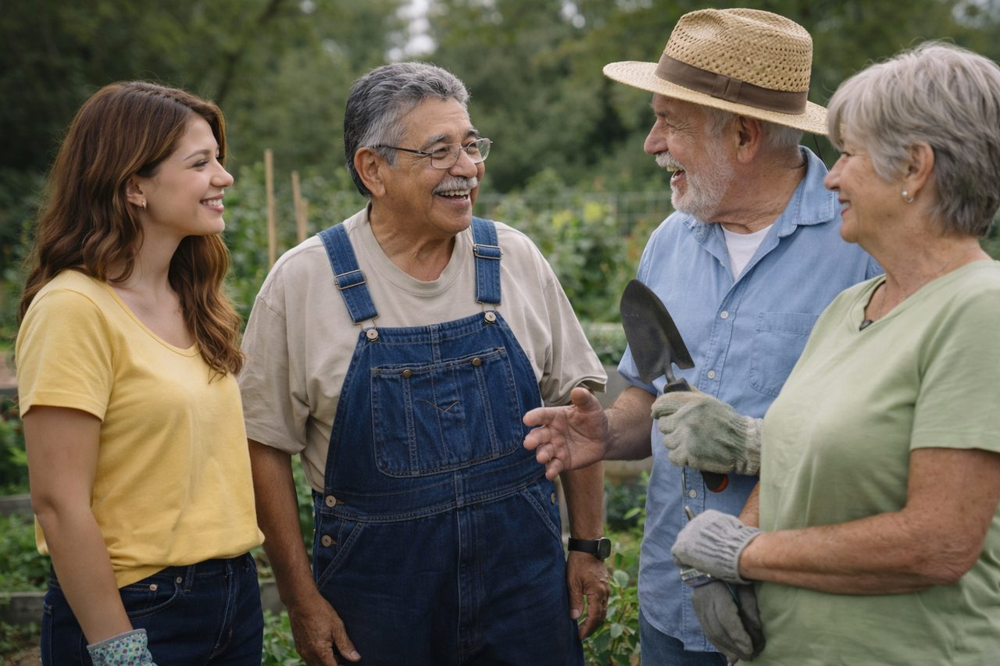

Maya's story
Adaptation can preserve what matters
At a community garden, Maya works beside older adults who exchange stories, jokes, advice, and practical help. One participant has chosen fewer activities but invests deeply in close relationships.
Another gardener adapts tasks after a mobility change. Lighter tools, a raised work surface, and shared help change how the work is completed without removing contribution, identity, or purpose.
Maya sees continuity and change operating together. Late adulthood is not one story of decline; it includes selectivity, interdependence, adaptation, meaning, and many ways of participating.
Reading lens: Notice when a method changes so that a valued goal, relationship, identity, or form of participation can continue.